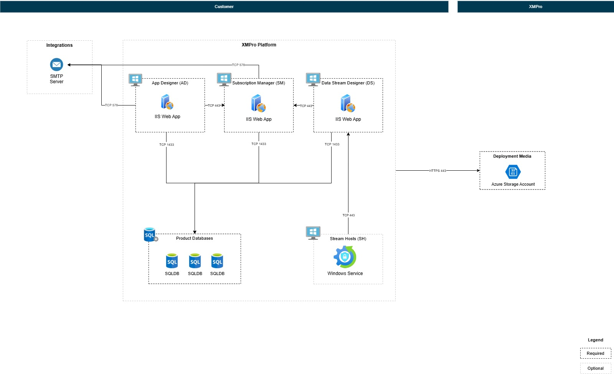

Multi-Server Deployment
Introduction
Deploy XMPro products across multiple Windows servers for enterprise-scale architectures. This approach enables distributed workloads, product isolation, and high-availability configurations. Use multi-server deployment when you need to scale beyond a single server or require separation between products for security, performance, or compliance requirements.
Note
Single-Server vs Multi-Server: For simpler deployments where all products run on one server, see the main installation guide. Use multi-server deployment when you need:
- Distributed load across multiple servers
- Isolation between products for security or performance
- Scalability for high-availability architectures
Important
Deployment Responsibilities
Multi-server deployments follow XMPro's two-phase deployment responsibility model:
- Phase 1 (Customer): Provision all servers, install prerequisites, configure networking and security
- Phase 2 (XMPro/Partner): Deploy XMPro applications using the installer
This guide focuses on Phase 2 application deployment. Ensure Phase 1 infrastructure is complete before proceeding.
Prerequisites
Each server in your multi-server deployment must meet the standard prerequisites. See Prerequisites for complete requirements including:
- Windows Server 2022
- IIS with required features
- SQL Server 2022 with Mixed Mode authentication
- Certificates (signing and SSL)
- .NET Framework and .NET 8 Hosting Bundle
Note
Database Configuration: Each product can use different SQL Server instances or credentials. See Database Configuration for all available options.
Product Dependencies
XMPro products must be installed in this order due to dependencies:
SM (Subscription Manager)
↓
AD (App Designer) ← Requires product keys generated by SM
↓
DS (Data Stream Designer) ← Requires product keys generated by SM
↓
SH (Stream Host) ← Requires DS URL and collection details
Why this order?
- SM creates foundational data (company, products, licenses) required by all other products
- AD and DS both need product keys generated by SM database for authentication and licensing
- SH needs DS URL and collection details for data stream execution
Multi-Server Architecture

Important
Configuration File Preservation
The installer automatically preserves existing configuration from C:\XMPro\:
- Database credentials (SQL Server, username, password)
- SMTP settings (if previously configured)
- Certificate paths and passwords
- Previous product configurations
You'll see these as defaults during reinstallation - press Enter to keep them.
Installation Workflow
Step 1: Install SM (Server 1)
Run the installer on your SM server:
powershell.exe -ExecutionPolicy Bypass -Command "$env:SCRIPT_URL='{{INSTALL_URL_PREFIX}}{{VERSION}}/install-xmpro-application.ps1'; iex (irm $env:SCRIPT_URL)"
When prompted, configure:
- Products: Select SM only
- Hostname: Enter Server 1's DNS name (e.g.,
sm.yourcompany.comorsm-server-01) - Port: 5201 (default) or custom port
- Database, SMTP, certificates: Configure as prompted
Installation creates:
- SM database on SQL Server
- SM IIS application
- Configuration files in
C:\XMPro\
Step 2: Copy Configuration to AD Server
Copy only the .json configuration files from SM server to AD server:
- Source:
C:\XMPro\*.jsonon SM server (Server 1) - Destination:
C:\XMPro\on AD server (Server 2)
Note
What gets copied:
- Configuration files only (
Global-variables.json,Global-settings.json,SM-variables.json, etc.) - These contain database credentials, SMTP settings, and certificate paths
Security: Ensure certificates themselves are accessible on the destination server at the paths specified in the configuration files. Do not copy certificates - only the configuration that references them.
Step 3: Install AD (Server 2)
Run the installer on your AD server:
powershell.exe -ExecutionPolicy Bypass -Command "$env:SCRIPT_URL='{{INSTALL_URL_PREFIX}}{{VERSION}}/install-xmpro-application.ps1'; iex (irm $env:SCRIPT_URL)"
When prompted, configure:
- Products: Select AD only
- Hostname: Enter Server 2's DNS name (e.g.,
ad.yourcompany.comorad-server-01) - Port: 5202 (default) or custom port
- Other settings: Uses existing configuration from
C:\XMPro\(press Enter to accept defaults)
Installation creates:
- AD database on SQL Server
- AD IIS application
Step 4: Copy Configuration to DS Server
Copy only the .json configuration files from AD server to DS server:
- Source:
C:\XMPro\*.jsonon AD server (Server 2) - Destination:
C:\XMPro\on DS server (Server 3)
Step 5: Install DS (Server 3)
Run the installer on your DS server:
powershell.exe -ExecutionPolicy Bypass -Command "$env:SCRIPT_URL='{{INSTALL_URL_PREFIX}}{{VERSION}}/install-xmpro-application.ps1'; iex (irm $env:SCRIPT_URL)"
When prompted, configure:
- Products: Select DS only
- Hostname: Enter Server 3's DNS name (e.g.,
ds.yourcompany.comords-server-01) - Port: 5203 (default) or custom port
- Other settings: Uses existing configuration from
C:\XMPro\(press Enter to accept defaults)
Installation creates:
- DS database on SQL Server
- DS IIS application
Step 6: Copy Configuration to SH Server
Copy only the .json configuration files from DS server to SH server:
- Source:
C:\XMPro\*.jsonon DS server (Server 3) - Destination:
C:\XMPro\on SH server (Server 4)
Step 7: Install SH (Server 4)
Run the installer on your SH server:
powershell.exe -ExecutionPolicy Bypass -Command "$env:SCRIPT_URL='{{INSTALL_URL_PREFIX}}{{VERSION}}/install-xmpro-application.ps1'; iex (irm $env:SCRIPT_URL)"
When prompted, configure:
- Products: Select SH only
- DS URL: Enter Server 3's DS URL (e.g.,
https://ds.yourcompany.com:5203orhttps://ds-server-01:5203) - Other settings: Uses existing configuration from
C:\XMPro\(press Enter to accept defaults)
Installation creates:
- Stream Host Windows service
Post-Deployment Configuration
Configure Host Files
After completing all installations, configure the hosts file on each server to enable proper hostname resolution between servers. This is essential when DNS is not configured for your internal server names.
Important
Why Configure Hosts Files?
During installation, each XMPro product is configured with a hostname (e.g., sm-server-01, ad.yourcompany.com). Products use these hostnames to communicate with each other for:
- Authentication: Products authenticate with SM using the configured hostname
- API Communication: AD and DS make requests to SM for license validation
- Stream Host Connection: SH connects to DS using the DS hostname
Without hostname resolution:
- Products cannot locate each other on the network
- Authentication requests fail with "remote name could not be resolved" errors
- The multi-server deployment will not function
Alternatives to hosts file:
- If your network has DNS configured, you can add DNS A records instead
- The hosts file is the simplest solution when DNS is not available or for testing environments
Configure Hosts File on Each Server
On each server (SM, AD, DS, SH), add entries for all other servers:
Open Notepad as Administrator
- Press Windows key
- Type "Notepad"
- Right-click "Notepad" and select "Run as administrator"
Open the hosts file
- In Notepad, click File > Open
- Navigate to:
C:\Windows\System32\drivers\etc\ - Change file filter to "All Files (.)"
- Select the
hostsfile and click Open
Add entries for all servers
Add the following entries (replace with your actual server IPs and hostnames):
# XMPro Multi-Server Deployment 192.168.1.10 sm-server-01 192.168.1.11 ad-server-01 192.168.1.12 ds-server-01 192.168.1.13 sh-server-01Save the file
- Click File > Save
- Close Notepad
Note
Example Hostname Formats:
- Simple names:
sm-server-01,ad-server-01,ds-server-01,sh-server-01 - Fully qualified:
sm.yourcompany.com,ad.yourcompany.com,ds.yourcompany.com,sh.yourcompany.com
Use the same hostname format that you specified during product installation.
Tip
Testing Hostname Resolution:
After updating the hosts file, verify connectivity from any server:
ping sm-server-01
ping ad-server-01
ping ds-server-01
ping sh-server-01
Each ping should resolve to the correct IP address and respond successfully.
Post-Deployment Validation
After completing post-deployment configuration, verify that products can communicate across servers:
- Access SM - Navigate to
https://<sm-hostname>:5201and log in with super admin credentials - Access AD - From SM, navigate to App Designer or directly access
https://<ad-hostname>:5202 - Access DS - From SM, navigate to Data Stream Designer or directly access
https://<ds-hostname>:5203 - Verify Stream Host - In DS, check that Stream Host appears in the Stream Host list with "Connected" status
If any product fails to load or Stream Host shows "Disconnected", see Troubleshooting Guide.
Next Steps
After completing your Windows Server deployment, proceed to:
Post-deployment - Complete the setup and configuration of your XMPro environment.
Need Help?
For troubleshooting multi-server deployment issues, see the Troubleshooting Guide.
Last modified: December 08, 2025